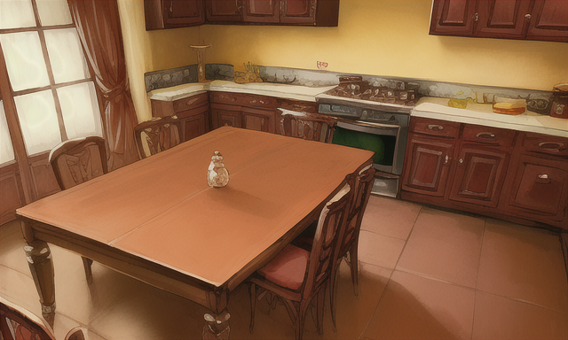

|
前回、背景が表示されるサンプルを見たので、今回は実際に背景を変更してみます。 まずは背景に表示したい絵を用意して、PictureBGの中に入れます。 とりあえず、動作テスト用のファイルを用意したのでこちらを落として使ってみてください。 |  |
|
minisina.txtに二文加えます。 Hello World!の後に左にある2文を加えます。 |
bg,2 新しい背景にします |
|
CHARSEET.txtに今回追加した文章に対応する背景を追加します。 登録が2番目になるので、３番目の部分が2になります。 背景の名前、拡張子は画像に合わせて変わります。 画像ですが、基本的にjpg及びpngに対応しているのでどちらかの画像を用意してください。 最終的に本体で動かしてみて動いたら成功です | BG,11,2,AIBG1,png |